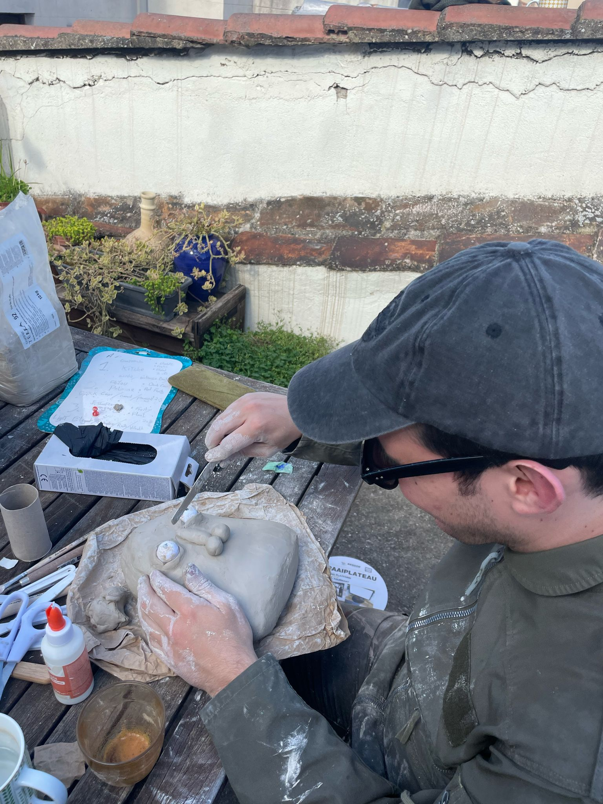
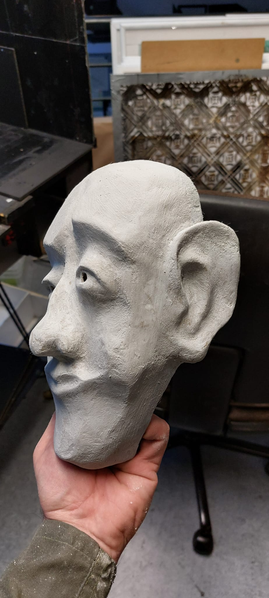
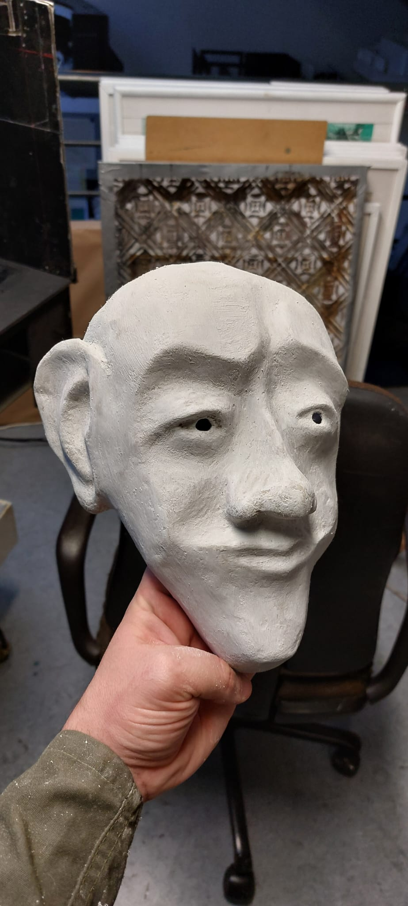
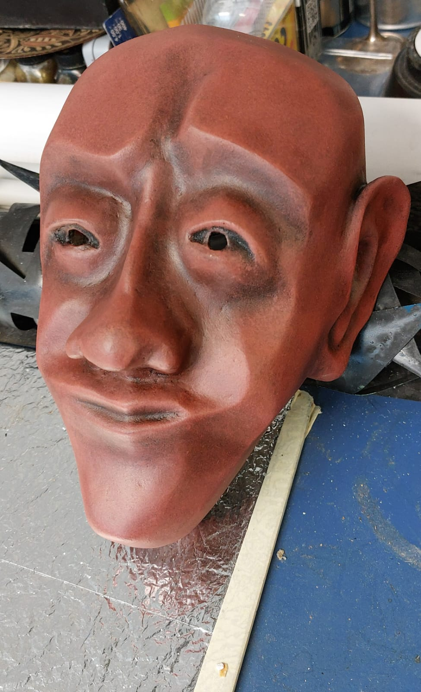
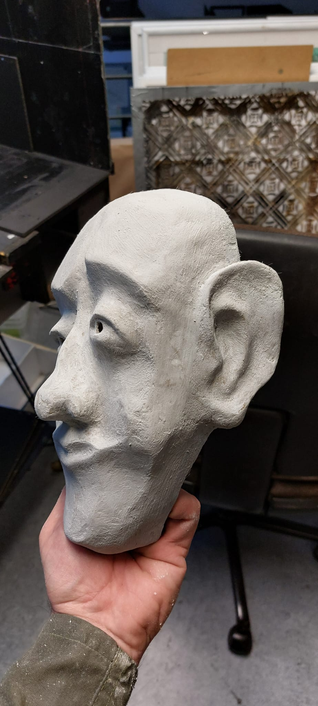
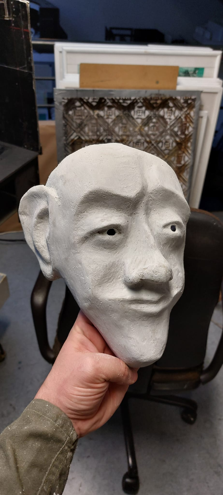
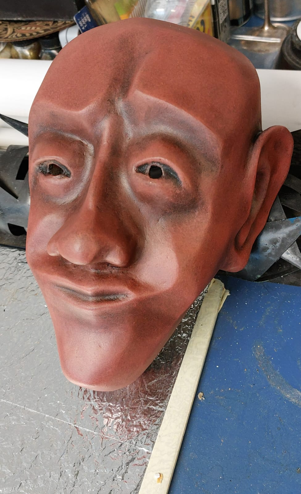

work (selection)
theatre
- 2024 - Scheitern, Scheitern, Scheitern - D: Thieß Brammer, Dominik Weber, Stephanie Simons - Theater Freiburg
- 2024 - Woyzeck - D: Bojana Lazić - Theater Freiburg
- 2023 - Hinauf zu den Sternen - D: Nicolas Charaux - Theater Freiburg
- 2022 - Professor Bernhardi - D: Amir Reza Koohestani - Theater Freiburg
- 2022 - Der Trafikant - D: Eike Weinreich - Theater Freiburg
- 2021 - Letzter Stand I: allos autos - D: Leonie Jenning, Martha von Mechow - Volksbühne am Rosa-Luxemburg-Platz
- 2020 - Pfisters Mühle - D: Rebekka David - Staatstheater Braunschweig
- 2018 - Hyper Emotional Family - D: Leonie Jenning, Martha von Mechow - Berliner Ringtheater
- 2017 - Sabotage Camouflage - D: Leonie Jenning, Martha von Mechow - Volksbühne am Rosa-Luxemburg-Platz
cinema
- 2025 - Nosejob - D: Leo Geissler - short film
- 2024 - Camel Blues - D: Leo Geissler - short film
- 2022 - So long daddy, see you in hell - D: Christopher Roth - feature film
- 2017 - Tankstellen der Befindlichkeit - D: Martha von Mechow - short film
music
masks
 




